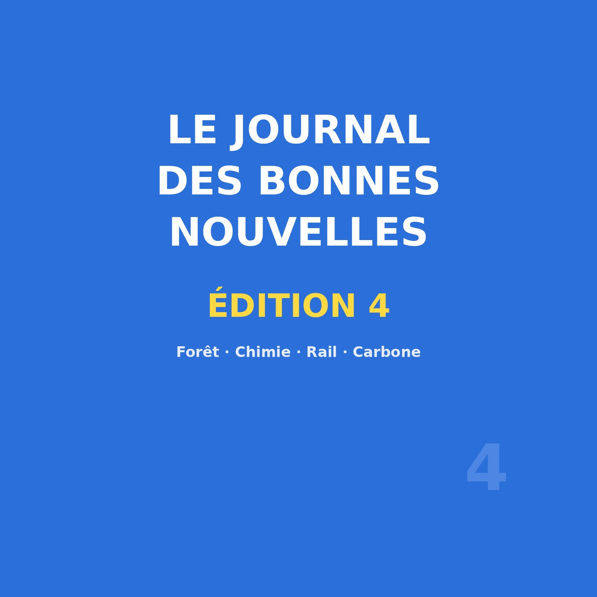
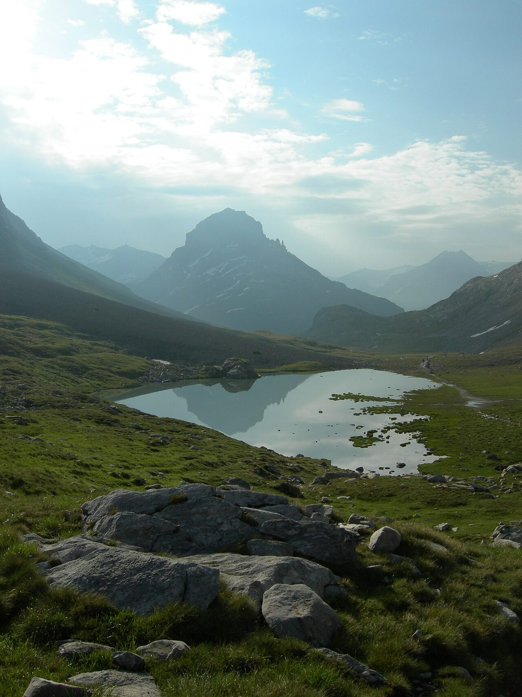

Édition n°4 — aires protégées, Nobel de chimie, train solaire, CO₂ capté
Œuvre de fiction radiophonique : les reporters sont fictifs, mais tous les faits évoqués sont réels, datés et sourcés.

🎧 Écoutez le journal : Le Journal des Bonnes Nouvelles — Édition 4, 10 min 56 — Écouter sur Spotify →
Même règle qu'au début : ne retenir que ce qui peut être daté, chiffré et rattaché à une source. Le programme va de la planification écologique à la recherche fondamentale, puis au train et au carbone. Reportages menés par des correspondants fictifs.
Premier sujet : un texte publié le 28 octobre 2026 par le ministère de la Transition écologique, de la Biodiversité et des Négociations internationales sur le climat et la nature : le deuxième plan d'action national pour 2026-2030, dans le cadre de la Stratégie nationale pour les aires protégées (SNAP) de 2021.
75 % du territoire national est désormais couvert par une aire protégée — 78 % des espaces maritimes, 32,6 % des espaces terrestres. Et surtout 22,5 % du territoire bénéficie d'une protection forte — 23 % en mer, 6,49 % à terre — alors que l'objectif national d'au moins 10 % est dépassé, notamment en mer et dans les territoires ultra-marins. S'y ajoutent plus de 600 projets identifiés depuis 2021. Le plan arrive en appui du futur plan national « Agir pour restaurer la nature » (14 octobre 2026).
Deuxième sujet, le laboratoire. Le prix Nobel de chimie 2026 est attribué à parts égales à Henri B. Kagan, chimiste français, et à Kenso Soai, chimiste japonais, « for the discovery of non-linear effects and autocatalysis in asymmetric organic synthesis ».
Kagan est professeur émérite au Collège de France ; il a consacré ses travaux à la chiralité et à l'« amplification chirale » : un très faible déséquilibre chiral initial est amplifié par la réaction jusqu'à dominer le produit final — mécanisme fondateur de la chimie des molécules chirales, celle des médicaments. Soai a décrit en 1995 la réaction autocatalytique asymétrique.
Troisième sujet, le rail. L'Écotrain est un train partiellement conçu en Indre-et-Loire et fonctionnant à l'énergie solaire. Le 14 octobre 2026, au Luxembourg, il a reçu le prix « Carbon Super-Saver » à l'European Startup Prize for Mobility (20 Minutes, 22 octobre 2026).
Deux traits à retenir : une technologie de propulsion et une fabrication de proximité, des pièces pensées, dessinées et pour partie construites dans un rayon de quelques centaines de kilomètres. Ce n'est pas un prototype de salon : c'est un projet industriel porté par une PME régionale, visant la petite série sur des lignes régionales. Une rame qui consomme peu et se construit chez nous devient une question de qualité territoriale.
Quatrième sujet, le carbone. Nuada, spin-out de l'université Queen's University Belfast, obtient 14,6 millions d'euros de l'Innovation Fund de l'Union européenne pour SCALA, une unité de captage du carbone biogénique à implanter en France (annonce du 27 octobre 2026). L'enjeu était rude : la Commission européenne a réparti 3,4 milliards d'euros entre 77 projets.
Deux mots portent l'essentiel. « Biogénique » : il ne s'agit pas du CO₂ fossile des cheminées, mais de celui du biogaz et de la biomasse. « Sans solvant » : la technologie se passe de solvants chimiques, grâce à un captage par adsorption. Elle est destinée aux industries lourdes et permet de faire tourner des installations existantes.
Dernière séquence, hors des chiffres : la note du sourire, segment littéraire récurrent de l'émission. Elle n'avance aucun fait vérifiable ; c'est une chronique d'impressions. Sujet : le rituel du dessin au fusain au petit matin, et le plaisir de regarder la lumière changer sur un trait de fusain. Le fusain n'est pas un outil de précision : gras, il s'efface, il se brise — et c'est ce qui convient. Règle unique : aucune affirmation factuelle.
Des aires protégées qui respirent, d'un chimiste français récompensé, d'un train au soleil et d'une usine qui va capter le carbone : cette quatrième édition ne raconte pas une victoire, mais des chantiers — planifiés, primés, financés, encore à construire. Rendez-vous à la prochaine édition.

Sources : Ministère de la Transition écologique (28 octobre 2026) · Fondation Nobel — Nobel Prize in Chemistry 2026 · 20 Minutes — le train solaire (22 octobre 2026) · Queen's University Belfast — SCALA (27 octobre 2026).